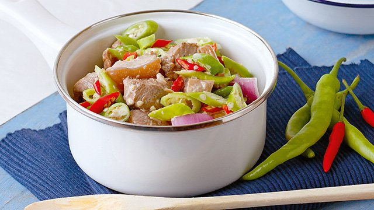
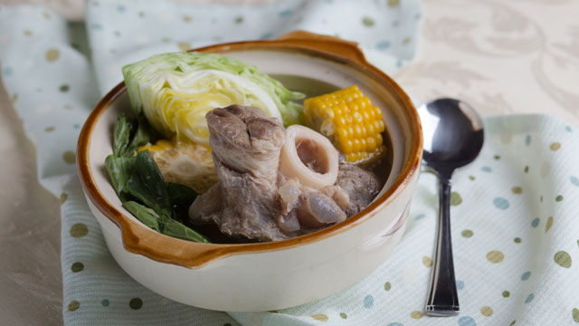
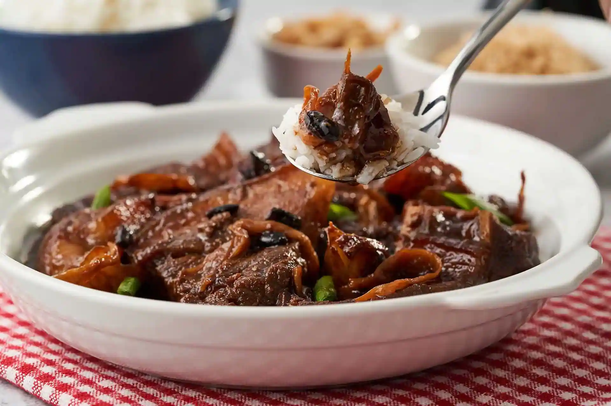
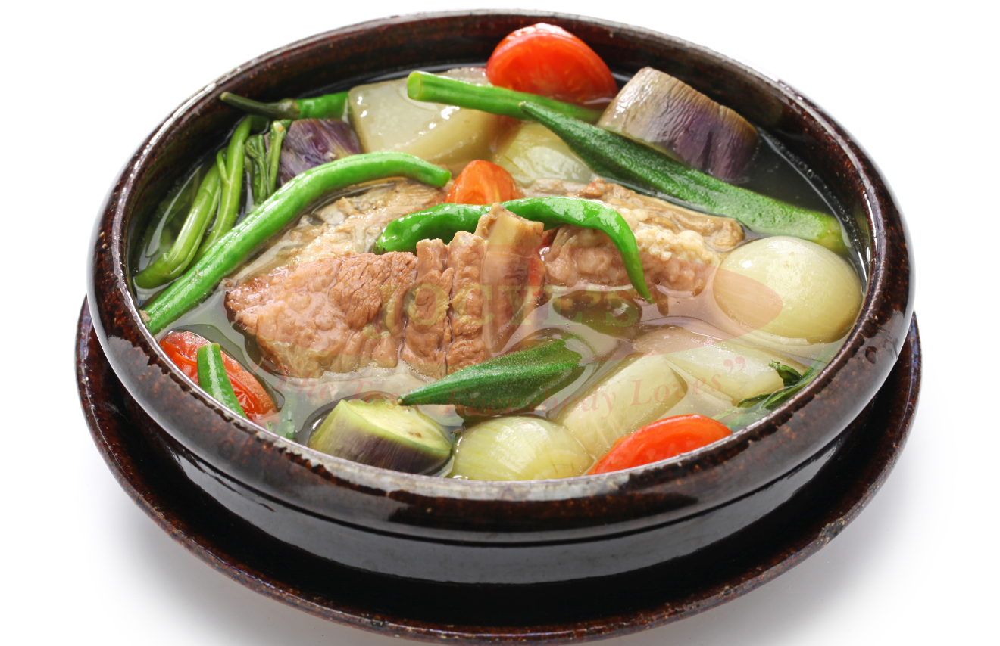

Bicol Express
Description: A spicy and savory pork dish that's stewed in coconut milk to give it a rich and creamy sauce.
Ingredients:
- 1 tablespoon canola oil
- 1 onion, peeled and sliced thinly
- 4 cloves garlic, peeled and minced
- 2 pounds pork belly, cut into 1-inch cubes
- 2 tablespoons fresh shrimp paste
- 1 can (13.5 ounces) coconut milk
- 1 cup water
- 14 pieces Thai chili peppers, stemmed and minced
- 2 cups finger chilies (siling haba), sliced
- 1 cup coconut cream
- salt and pepper to taste
Instructions:
- In a wide pot over medium heat, heat oil. Add onions and garlic and cook, stirring occasionally, until softened.
- Add pork and cook, stirring occasionally, until lightly browned.
- Add shrimp paste and cook, stirring occasionally, for about 1 to 2 minutes.
- Add coconut milk, water, and chili peppers. Bring to a simmer and cook for about 35 to 35 minutes or until pork is tender and liquid is reduced and begins to render fat.
- Add finger chilies and cook, stirring regularly, for about 1 to 2 minutes.
- Add coconut cream and continue to simmer until thickened and begins to render fat.
- Season with salt and pepper to taste. Serve hot.
Bulalo
Description: A Filipino beef soup or nilaga with a rich and flavorful broth, made by simmering beef shanks and marrow bones with ginger and an assortment of vegetables.
Ingredients:
- 2 lbs beef shank
- ½ cabbage whole leaf individually detached
- 1 bundle bok choy
- 2 cobs corn each cut into 3 parts
- 2 Tablespoons whole peppercorn
- 1/2 cup green onions cut unto 1 1/2 inch pieces
- 1 onion
- 34 ounces water
- fish sauce to taste optional
Instructions:
- In a big cooking pot, pour in water and bring to a boil.
- Put-in the beef shank followed by the onion and whole pepper corn then simmer for 1.5 hours (30 mins if using a pressure cooker) or until meat is tender.
- Add the corn and simmer for another 10 minutes.
- Add the fish sauce,cabbage, pechay, and green onion (onion leeks).
- Serve hot. Share and Enjoy!
Chicken Adobo

Description: Chicken Adobo is an authentic Filipino dish and is one of the mostly recognized Filipino foods.
Ingredients:
- 2 tablespoons vegetable oil
- 1 (3 pound) chicken, cut into pieces
- 1 large onion, quartered and sliced
- 2 tablespoons minced garlic
- ⅔ cup low sodium soy sauce
- ⅓ cup white vinegar
- 1 tablespoon garlic powder
- 2 teaspoons black pepper
- 1 bay leaf
Instructions:
- Heat vegetable oil in a large skillet over medium-high heat. Cook chicken pieces until golden brown, 2 to 3 minutes per side. Transfer chicken to a plate and set aside.
- Add onion and garlic to the skillet; cook until softened and brown, about 6 minutes.
- Pour in soy sauce and vinegar and season with garlic powder, black pepper, and bay leaf.
- Return chicken to pan, increase heat to high, and bring to a boil. Reduce heat to medium-low, cover, and simmer until chicken is tender and cooked through, 35 to 40 minutes.
Chicken Caldereta

Description: Chicken Caldereta is another chicken dish which most of us Filipinos really love.
Ingredients:
- 1 kg chicken (cut into serving size)
- 2 pcs carrots (diced)
- 1 pc potato (diced)
- 2 pcs red onion ( diced)
- 5 cloves garlic (chopped)
- 2 pcs red chili
- 2 pcs bellpepper (diced)
- 100 grams cheese
- 2 tbsp oil
- 1 tsp salt
- 1 tbsp sugar
- 1 tsp pepper
- 2 tbsp soy sauce
- 3 to 5 tbsp ketchup
- 1 pack tomato sauce
- 1 pack pineapple tidbits
- 5 tbsp ground peanuts
- 4 tbsp sweet relish pickles
- 4 tbsp peanut butter
- 2 cups of Water
Instructions:
- Saute the garlic in a pan with oil until golden brown.
- Add the onion and chicken. Stir well.
- Add the salt, sugar, pepper, pickles, soy sauce and chili. Stir and cover it for 10 minutes.
- Remove the cover and add the ground peanuts, cheese, peanut butter, ketchup, carrots, potato, water and tomato sauce. Stir and cover it until the carrots and potato get soft.
- Keep stirring every minute to avoid getting burned from the bottom of the pan.
- Lastly add the bell pepper and pineapple chunks, stir slowly for 1 minute.
- Turn off the heat and serve while hot. Enjoy
Kare-Kare
.jpg)
Description: Create our delicious and easy to follow recipe for Classic Kare-Kare made extra special with Knorr Beef Cubes.
Ingredients:
- 1 -1.5 kilogram oxtail, cut ups
- 2 pcs onions, quartered
- water, enough to cover meat
- 4 tbsp canola oil
- 2 tbsp annatto seeds /achuete seeds
- 1 pc onion, chopped
- 10 cloves garlic, chopped
- 1/2 cup creamy or unsweetened peanut butter
- 2 pcs Knorr Beef Cubes
- 3 pcs eggplants, sliced
- 1 bundle sitaw, cut into 2" pieces
- 1 pack pechay Tagalog, sliced or Bok-Choi
- Other vegetables to include: Pumpking flowers, spinach
Instructions:
- First, you need to tenderize the oxtail to be able to enjoy this majestic dish. Get a pot and throw in the oxtail and quartered onions in. Pour the water and just boil over high heat then reduce to a simmer until oxtail is tender. Once tender, strain the oxtail from the broth and set aside the meat and broth.
- Now, get a pan and combine the oil and annatto seeds together. Cook over low heat for 3 minutes or until the color of the oil turn orange. Strain out the seeds then pour the infused oil back into the pan. Throw in the onions and garlic and saute until lightly toasted. Add the softened oxtail next and continue to saute.
- Just a few more steps and this dish is done. Add the peanut butter, 1-1/2 cups of broth (where oxtail was softened) and Knorr Beef Cubes. Mix well until peanut butter is dissolved. Simmer for 15-20 minutes until sauce has slightly thickened.
- Now, add the vegetables last and cook until done. That's it! Classic Kare Kare is best enjoyed with a serving of warm bagoong. We kid you not, you will definitely eat more than usual.
Lumpia

Description: This is a traditional Filipino recipe for lumpia, or fried spring rolls.
Ingredients:
- 1 (12 ounce) package lumpia wrappers
- 1 pound ground beef
- ½ pound ground pork
- ⅓ cup finely chopped onion
- ⅓ cup finely chopped green bell pepper
- ⅓ cup finely chopped carrot
- 1 quart oil for frying
Instructions:
- Make sure the lumpia wrappers are completely thawed. Lay several out on a clean dry surface and cover with a damp towel. The wrappers are very thin and the edges will dry out quickly.
- In a medium bowl, blend together the ground beef and pork, onion, green pepper and carrot. Place about 2 tablespoons of the meat mixture along the center of the wrapper. The filling should be no bigger around than your thumb or the wrapper will burn before the meat is cooked. Fold one edge of the wrapper over to the other. Fold the outer edges in slightly, then continue to roll into a cylinder. Wet your finger, and moisten the edge to seal. Repeat with the remaining wrappers and filling, keeping finished lumpias covered to prevent drying. This is a good time to recruit a friend or loved one to make the job less repetitive!!
- Heat oil in a 9 inch skillet at medium to medium high heat until oil is 365 to 375 degrees F (170 to 175 degrees C) Fry 3-4 lumpia at a time. It should only take about 2-3 minutes for each side. The lumpia will be nicely browned when done. Drain on paper towels.
- You can cut each lumpia into thirds for parties, if you like. In the Philippines, lumpia was eaten with banana ketchup, but I've never seen it sold in America.
Pancit Bihon

Description: Pancit is any type of noodle in the Philippines, like rice vermicelli noodles.
Ingredients:
- 125 g pork, thinly sliced
- 1/4 cup water
- 2 tbsp oil
- 1 small pc onion chopped
- 4 cloves garlic chopped
- 1/4 cup chicken liver, cut into bite-sized pcs
- 1/2 cup shrimp peeled
- 1 small pc carrot, cut into thin strips
- 1/4 cup chicharon, ends trimmed
- 1/4 pc cabbage, sliced into thick strips or baby pak choi
- 2 tbsp kintsay, roughly chopped
- 1/2 cup beansprouts, well rinsed and drained2 cups water
- 2 pcs Knorr Shrimp Cubes
- 1 tbsp soy sauce
- pinch ground black pepper
- 1 pack (240 g) pancit canton noodles
Instructions:
- First, you need to get a pan and boil the pork in 1/4 cup water for 10-15 minutes or until the water dries up.
- Next, pour in the oil and begin sautéing the pork until it turns brown in color.
- Throw in the onions and garlic next and cook until they are tender.
- Now, add the chicken liver and sauté them until fully cooked before adding the shrimps.
- When the shrimp changes color, add the carrots, chicharo, cabbage or pak-choi, beansprouts and kintsay and sauté for a good 1 minute.
- Since the meats and vegetables are done, let's now make the sauce. Pour the water, Knorr Shrimp Cube and soy sauce into the pan and allow these to simmer until the cube is dissolved well. Give this a nice seasoning of pepper.
- We're almost there with only a few more steps. Take the meat and vegetables out of the pan and drain them in a strainer or colander before transferring them in a bowl. This ensures that the noodles will cook properly in the stock and that the vegetables are still firm and not overcooked as well.
- With the stock still simmering, drop the noodles in. Stir it every once in a while. We need to move it around from time to time to let the noodles absorb all the flavours of the stock. If the noodles have absorbed all the liquid and it's still not yet tender, water may be added.
- Once the noodles are tender, transfer them onto a serving platter and arrange the cooked meats and vegetables on top. And then that's it! Our Pancit Canton is ready to be served. This dish is best served and paired with some calamansi and soy sauce on the side.
Pork Humba
Description: Try this pork humba recipe for your next Sunday family lunch. Expect praises for its unique sauce with pineapple juice, black beans, and Knorr Pork Cube.
Ingredients:
- 2 tbsp cooking oil
- 1 pc onion, chopped
- 1 tbsp garlic, chopped
- ½ kg liempo, cubed
- 1 pc Knorr pork cube
- ¼ cup black beans
- ¼ cup vinegar
- 1 cup pineapple juice
- water as needed
- ½ cup brown sugar
- ¼ cup soy sauce
- 2 pcs chilies
- ½ cup banana blossoms
- Optional: Serve with steamed Bok-Choi or Spinach
Instructions:
- Get your pan nice and hot over medium heat. Pour some oil and sauté the onion, garlic until brown and soft, then add the cubed pork.
- Add Knorr Pork Cubes and black beans. Sauté for a minute.
- Pour the vinegar and let this simmer before adding the pineapple juice, water, brown sugar, soy sauce, chillies and banana blossoms.
- Cook this covered at low heat until pork is tender and sauce has thickened. Taste and check the seasoning.
- With hot rice, you'll find yourself eating more than usual. So, what are you waiting for? Give this recipe a try!
Sinigang na Baboy
Description: This sinigang na baboy recipe uses the rich flavors of pork ribs and tamarind to create a lip-smacking experience.
Ingredients:
- 4¼ cups water
- 2 cups pork spare rib cut into chunks
- 1 pc red onion, quartered
- 2 pcs medium sized tomato, quartered
- 8 pcs sitaw, sliced into 2” pieces
- 250 g kangkong stalk and leaves
- 1 pc talong, sliced
- 2 pcs siling pangsigang
- 1 (20g) pack Knorr Sinigang sa Sampalok Mix Original
- Optional: labanos, okra
Instructions:
- Begin by washing pork spare ribs in cold running water to remove any visible impurities. Then, place pork ribs submerge in a medium pot with a liter of water. Bring to a boil without covering the pot and allow the scum to float to the surface. Meticulously remove the scums from the surface of the water using a slotted spoon or a spatula. Scums are impurities found in meat.
- After the broth clears up, turn you heat to medium setting, then it's time toss in your onions and tomatoes to add flavor to the broth. Cover your pot and let it simmer to fully cook your meat. Use a fork to pierce the meat so that the flavors would also enter the meaty parts of the spare ribs, You also do this so you can tell if it's already set and tender.
- You can already add your vegetables. Start by adding the sitaw, kangkong stalks and talong into the pot and cook until these turn dark green. If you decide to use labanos and okra, you can also add those at this point. This should take roughly around 2-3 minutes.
- Add in your siling sigang, kangkong leaves and the Knorr Sinigang sa Sampaloc Mix. Stir and let it simmer. It should be done in about 2-3 minutes.
- All done! Transfer your Sinigang to a serving bowl. This is a happy treat that warms, soothes and satisfies everyone in the family! Remember to prepare extra servings of rice to enjoy the extra asim kilig taste of this Filipino classic soup.
Sizzling pork sisig

Description: Sizzling pork sisig! A cast iron platter is optional but highly suggested in order to serve this with that sizzle and pop.
Ingredients:
- 1 lb pork belly
- 1 whole pork snout + jowls
- 1 pig ear
- 1/2 c chicken liver
- For boiling
- 1 c vinegar
- 1/2 c soy sauce
- 12 garlic cloves (1 head of garlic's worth)
- 2 bay leaves
- 1 T salt
- 1/2 t peppercorns
- 1 - sisig seasoning packet, or:
- 1/4 c kalamansi juice
- 1/4 c vinegar
- 1 t salt
- 1/2 t ground pepper
- 1 t garlic powder
- I T oil
- 10 thai chilis, chopped
- 3/4 c chopped shallots (can also use red onion)
- 1/4 c mayonnaise
- 1 egg, for topping
- 1 T butter (optional)
Instructions:
- Combine pork belly, face, ears, vinegar, soy sauce in a stock pot. Fill with water until meat is covered. Add bay leaves, salt, and peppercorns. Bring to a boil then simmer for at least an hour or until meat is no longer tight and tough.
- Remove meat from pot and grill for 10 minutes.
- Chop pork belly and face meat into 1/4 - 1/2 inch cubes. Finely chop pig ear pieces.
- Mix chopped pork in a bowl and add Thai chilis, kalamansi juice, vinegar, salt, pepper, and garlic powder (or sisig seasoning packet).
- In a saute pan over medium heat, add 1 T oil and saute shallots for 1-2 minutes. Add chicken livers; mash and saute until cooked through.
- Add chopped pork (with liquids) to saute pan, saute until meat is hot. Add mayonnaise and combine.
- (Optional) Heat a cast iron platter, add 1 T butter, add a serving of sisig and top with a cracked egg while still hot.